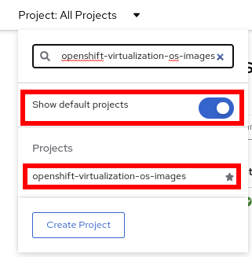

Optional: Storage Management
1. Introduction to Storage Management
Red Hat OpenShift supports multiple types of storage, both for on-premises and cloud providers. OpenShift Virtualization can use any supported container storage interface (CSI) provisioner in the environment you’re running on. For example, OpenShift Data Foundation, NetApp, Dell/EMC, Fujitsu, Hitachi, Pure Storage, Portworx, and many others support on-premises, CSI provisioned, ReadWriteMany (RWX) volumes with OpenShift Virtualization.
This workshop segment will explore Persistent Volume Claims (PVCs), which are used to request storage from the provider and store a VM disk. Many storage providers also support snapshots and clones of their devices, be sure to check with your vendor to verify the features supported by the CSI driver and storage device.
Notably, there are no restrictions on storage protocol (e.g. NFS, iSCSI, FC, etc.) specific to OpenShift Virtualization. The only requirement is that the RWX access mode is available for live migration. Otherwise, the storage that best meets the needs of your VMs and applications is always the right choice.

2. OpenShift Virtualization Default Boot Sources
Persistent virtual machines require persistent storage. This lab environment has OpenShift Data Foundation deployed to provide access to shared persistent volumes to host application data and virtual machine disks. During the installation of the OpenShift Virtualization Operator, some PersistentVolumeClaims were automatically created to hold template disks for various Linux distributions. These include:
-
Red Hat Enterprise Linux 8
-
Red Hat Enterprise Linux 9
-
Fedora
-
CentOS 7
-
CentOS Stream 8
-
CentOS Stream 9
Using these OS images is optional, and the creation + download can be disabled via the appropriate setting in the Operator. However, they are a quick and convenient way to get started provisioning virtual machines with OpenShift Virtualization since they use the "cloud" image for each of the respective distributions. This image includes cloud-init and, often, is a reduced OS footprint optimized for virtualization. Additionally, Red Hat provided boot images are automatically updated when new templates are released.
In this section, we will examine the PVCs created by the Operator along with PVCs used by a virtual machine.
The project openshift-virtualization-os-images contains all available boot sources and is automatically enabled when OpenShift Virtualization is installed.
-
Navigate to Storage → PersistentVolumeClaims:
-
Press in the dropdown for the projects, enable
Show default projects, and select the projectopenshift-virtualization-os-images -
List the boot sources that OpenShift Virtualization automatically created.
-
Select one from the list, for example,
fedora-XX, to obtain detailed information.In this lab, each of the PVCs will come from the
ocs-storagecluster-ceph-rbdstorage class provided by OpenShift Data Foundation. The details of the PVC show that it is aReadWriteManyPVC, which is required for live migration and is usingblockmode. The mode can beblockorfile, depending on the storage vendor, and either will work equally well so long asRWXmode is available.The capacity should be large enough to hold the base operating system and any packages/software installed that will be used by any VMs created from this template disk. VMs created by cloning the disk can increase the size of the disk but cannot shrink it.
-
When a VM is created, the Boot Source image is cloned, and a new disk is created. Switch to the project
vmexamplesand review the list of the PVCs (disks). You will see a PVC for each of the disks for VMs in this project and a PVC for the Microsoft Windows Server 2019 disk image created in an earlier section of this workshop. This PVC, with the Microsoft Windows ISO, can be reused by other virtual machines to install the operating system if desired. -
Select the
fedora02to obtain information -
A Persistent Volume Claim will claim to a specific storage class or to the default one to provision a volume. Navigate to Storage → PersistentVolumes to obtain a list. Sort by Claim.
-
Now navigate to Virtualization → Bootable volumes to obtain a list of the available volumes
3. Snapshots
3.1. Introduction
OpenShift Virtualization relies on the CSI storage provider’s snapshot capability to create disk snapshots for the virtual machine, which can be taken "online" while the VM is running or "offline" while the VM is powered off. If the KVM integrations are installed to the VM, you will also have the option of quiescing the guest operating system (quiescing ensures that the snapshot of the disk represents a consistent state of the guest file systems, e.g., buffers are flushed and the journal is consistent).
Since disk snapshots are dependent on the storage implementation, abstracted by CSI, performance impact and capacity used will depend on the storage provider. Work with your storage vendor to determine how the system will manage PVC snapshots and the impact they may or may not have.
|
Important
|
Snapshots, by themselves, are not a backup or disaster recovery capability. The data needs to be protected in other ways, such as one or more copies stored in a different location, to recover from the storage system failing. In addition to the OpenShift API for Data Protection (OADP), partners such as Kasten by Veeam, Trilio, and Storware support the ability to backup and restore virtual machines to the same cluster or other clusters as needed. |
With the VM snapshots feature, cluster administrators and application developers can:
-
Create a new snapshot
-
List all snapshots attached to a specific VM
-
Revert a VM to a snapshot
-
Delete an existing VM snapshot
3.2. Creating and using Snapshots
-
Navigate back to Virtualization → VirtualMachines and select a virtual machine, for example
fedora02in the projectvmexamples. -
Navigate to the Snapshots tab
-
Press Take snapshot and a dialog will open
NoteThere is a warning about the cloudinitdisknot being included in the snapshot. This is expected and happens because it is an ephemeral disk. -
Press Save and wait till the Snapshot has been created and the status shows as
Succeeded -
Press the three dots and check that the Restore option is greyed out because the VM is running
-
Switch to the Console tab to perform a modification to your running VM. This small modification will break your VM, and it won’t be able to boot anymore.
Log in with the user
fedoraand passwordocpVirtIsGre@t(or whatever you used in the previous module). Execute the command:[fedora@fedora02 ~]$ sudo rm -rf /boot/grub2; sudo shutdown -r now -
The Virtual Machine will not be able to boot.
ImportantIn the previous step, the operating system was shutdown from within the guest. However, OpenShift Virtualization will restart it automatically by default. This behavior can be changed globally or on a per-VM basis. -
Using the Actions dropdown menu, stop the Virtual Machine. Wait until the VM is stopped.
-
Navigate back to the Snapshots tab and press Restore on the previously created snapshot.
-
In the dialog shown, press Restore
-
Wait until the VM is restored, and then start the VM
-
Verify that the VM is booting correctly again.
4. Clone a Virtual Machine
Cloning creates a new VM that uses its disk image for storage, but most of the clone’s configuration and stored data is identical to the source VM.
-
Press Clone from the Actions menu, and a dialog will open
NoteNotice the VM, if is powered on, it will be stopped to perform the clone. If you have a snapshot of the VM, you can also create a clone from the snapshot without powering off the VM. -
A new VM is created, the disks are cloned and automatically the portal will redirect you to the new VM.
ImportantThe cloned VM will have the same identity as the source VM, which may cause conflicts with applications and other clients interacting with the VM. Use caution when cloning a VM connected to an external network or in the same project.
4.1. Glossary of terms
Container Storage Interface (CSI): An API specification for the management of container storage across different container orchestration (CO) systems. An OpenShift cluster can have many CSI provisioners from different vendors, and each VM can use storage from multiple vendors without conflicts.
Dynamic Provisioning: The storage framework allows you to create volumes on-demand, eliminating the need for cluster administrators to pre-provision persistent storage. Each VM disk is stored in a dynamically created storage volume at a 1:1 ratio.
Persistent volumes (PV): OpenShift Virtualization uses the Kubernetes persistent volume (PV) framework to allow cluster administrators to provision persistent storage for a cluster. VMs use a PVC to request PV resources without having specific knowledge of the underlying storage infrastructure.
Persistent volume claims (PVCs): A PVC is a request for storage capacity and, when bound to a PV, how the system knows which storage volume to mount for the VM. As a VM user, you’re able to use the storage without knowing the details of the underlying infrastructure environment.
Storage class: A storage class provides a way for administrators to describe the classes of storage they offer, for example, "gold," "silver," and "bronze". Different classes might map to quality of service levels, backup policies, and arbitrary policies determined by the cluster administrators. These will be specific to your storage vendor.